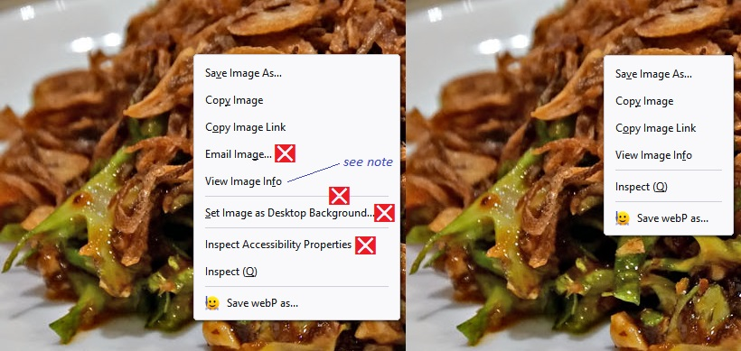
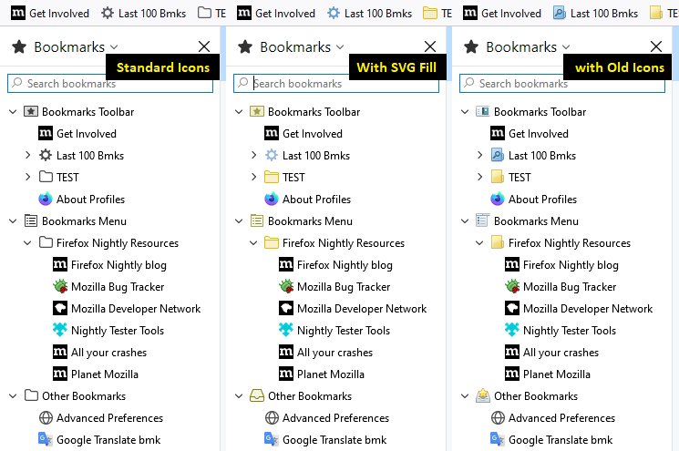
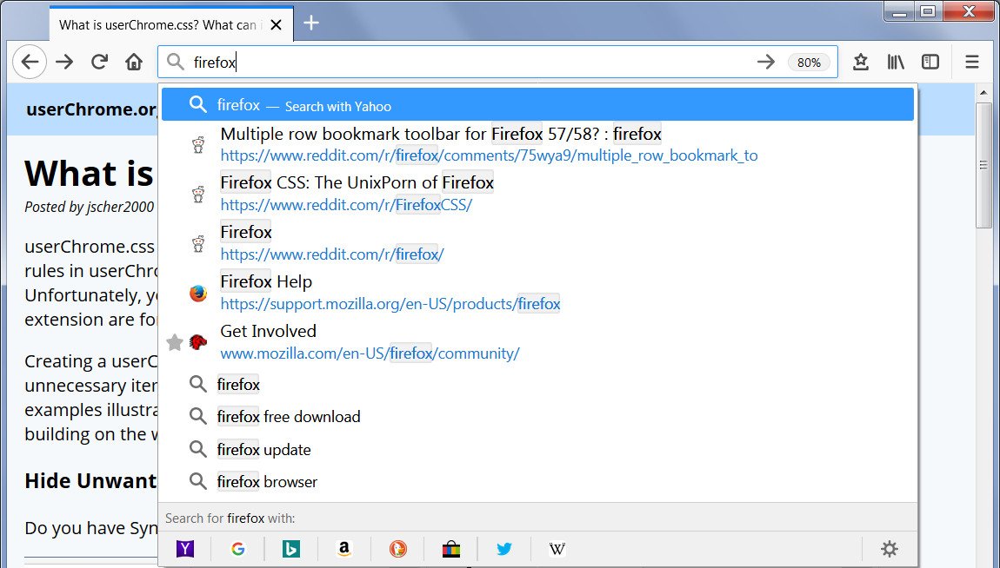

For Firefox 57-88, please refer to the archived version of this article.
userChrome.css is a style sheet with special importance to Firefox. The rules in userChrome.css are applied to the user interface, and can override nearly every built-in style rule. Unfortunately, you cannot use userChrome.css to change the functional operation of Firefox; that's what extensions are for (or in rare cases, startup scripts).
Creating a userChrome.css file and adding style rules allows you to make changes to fonts and colors, hide unnecessary items, adjust spacing, and make other changes to the appearance of Firefox. The following examples illustrate the wide range of effects you can create, either by creating your own style recipes, or building on the work of CSS wizards sharing their talents on the web.
Firefox 89 simplified the context menus, but you may find yourself accidentally clicking on items you will never use. Want to hide them? Yes, you can. This example is for the image context menu (the menu items that appear when you right-click an image):

CSS:
/*** Remove items from image context menu ***/
/* Email Image... */
#context-sendimage,
/* Set Image as Desktop Background... (and preceding separator) */
#context-sep-setbackground, #context-setDesktopBackground,
/* Inspect Accessibility Properties */
#context-inspect-a11y
{
display: none !important;
}
Note: if you want to return "View Image Info" to your menu, here's the preference for that (Firefox 89+):
- In a new tab, type or paste about:config in the address bar and press Enter/Return. Click the button accepting the risk.
- In the search box in the page, type or paste browser.menu.showViewImageInfo and pause while the list is filtered.
- Double-click the preference to switch the value from false to true.
Note: if you are on Mac, you probably need to disable use of native menus:
- In a new tab, type or paste about:config in the address bar and press Enter/Return. Click the button accepting the risk.
- In the search box in the page, type or paste widget.macos.native-context-menus and pause while the list is filtered.
- Double-click the preference to switch the value from true to false.
Exploring Further: If you are curious about writing or modifying CSS code, the Mozilla Developer Network (MDN) has extensive resources online: CSS. Unfortunately, the specific CSS selectors (such as the id's used in this example) which identify parts of the user interface are not documented in such a convenient way. You can find the skeleton of the menu system by pasting view-source:chrome://browser/content/browser.xhtml into the address bar and pressing Enter/Return to load it. You can get more help finding what you are looking for on community sites listed in this article.
Color in Gray Bookmark Folder Icons

SVG Fill
This method applies a color fill to the built-in graphics. In Firefox 89, the folder icon has become merely an outline, so the CSS includes an encoded version of the Firefox 57-88 style folder. It also restores the older icon for Other Bookmarks. Unfortunately, supplying the image creates distracting images in the Library window in empty columns. Hope to solve that some day.
CSS (download SVG fill) (updated 20 September 2025 with an addition for Firefox 143 toward the end):
/*
Colored folders for Bookmarks Menus, Bookmarks Sidebar, Bookmarks Toolbar, Library window, Add/Edit Bookmarks dialog
Substitutes a Firefox 57-style folder icon for the new wireframe folder icon
*/
/* Standard folder -- on Toolbar and Menus */
#PlacesToolbarItems toolbarbutton[container="true"]:not([query="true"]) .toolbarbutton-icon,
:-moz-any(
#PlacesToolbarItems,
#PlacesChevronPopup,
#BMB_bookmarksPopup,
#bookmarksMenu,
#OtherBookmarksPopup) menu[container="true"]:not([query="true"]) > :-moz-any(.menu-iconic-left > .menu-iconic-icon, .menu-icon),
/* Standard folder -- in Sidebar, Library, Add/Edit Bookmark dialog */
:-moz-any(
#bookmarks-view,
#editBMPanel_folderTree,
#placesList,
#placeContent) treechildren::-moz-tree-image(container),
#editBMPanel_folderMenuList > .menulist-label-box > .menulist-icon,
#editBMPanel_folderMenuList menupopup menuitem,
#editBMPanel_folderMenuList {
fill: #e8bb00 !important; /* slightly muted gold */
/* Specify icon for Firefox 89 Proton (base 64 conversion from old SVG with gold color) */
list-style-image: url("") !important;
}
/* Smart bookmark folder -- on Toolbar and Menus */
#PlacesToolbarItems toolbarbutton[container="true"][query="true"] .toolbarbutton-icon,
:-moz-any(
#PlacesToolbarItems,
#PlacesChevronPopup,
#BMB_bookmarksPopup,
#bookmarksMenu,
#OtherBookmarksPopup) menu[container="true"][query="true"] > :-moz-any(.menu-iconic-left > .menu-iconic-icon, .menu-icon),
/* Smart bookmark folder -- in Sidebar, Library, Add/Edit Bookmark dialog */
:-moz-any(
#bookmarks-view,
#editBMPanel_folderTree,
#placesList,
#placeContent) treechildren::-moz-tree-image(container, query) {
/* Specify icon for Firefox 89 Proton to override basic folder */
list-style-image: url("chrome://browser/skin/places/folder-smart.svg") !important;
fill: #69c !important; /* similar to blue smart folder color */
}
/*** Top-level "container" icons (otherwise would be Standard folder color) ***/
/* Bookmarks Menu -- in Sidebar, Library, Add/Edit Bookmark dialog */
:-moz-any(
#bookmarks-view,
#editBMPanel_folderTree,
#placesList,
#placeContent) treechildren::-moz-tree-image(container, OrganizerQuery_BookmarksMenu),
:-moz-any(
#bookmarks-view,
#editBMPanel_folderTree,
#placesList,
#placeContent) treechildren::-moz-tree-image(container, queryFolder_menu________),
#editBMPanel_bmRootItem > .menu-iconic-left,
#editBMPanel_folderMenuList[selectedIndex="1"] > .menulist-label-box > .menulist-icon,
#editBMPanel_folderMenuList[selectedGuid="menu________"] {
/* Specify icon for Firefox 89 Proton to override basic folder */
list-style-image: url("chrome://browser/skin/places/bookmarksMenu.svg") !important;
fill: olive !important;
}
/* Bookmarks Toolbar -- on Menus */
#BMB_bookmarksPopup #BMB_bookmarksToolbar > .menu-iconic-left > .menu-iconic-icon,
#bookmarksMenuPopup #bookmarksToolbarFolderMenu > .menu-iconic-left > .menu-iconic-icon,
/* Bookmarks Toolbar -- in Sidebar, Library, Add/Edit Bookmark dialog */
:-moz-any(
#bookmarks-view,
#editBMPanel_folderTree,
#placesList,
#placeContent) treechildren::-moz-tree-image(container, OrganizerQuery_BookmarksToolbar),
:-moz-any(
#bookmarks-view,
#editBMPanel_folderTree,
#placesList,
#placeContent) treechildren::-moz-tree-image(container, queryFolder_toolbar_____),
#editBMPanel_toolbarFolderItem > .menu-iconic-left,
#editBMPanel_folderMenuList[selectedIndex="0"] > .menulist-label-box > .menulist-icon,
#editBMPanel_folderMenuList[selectedGuid="toolbar_____"] {
/* Specify icon for Firefox 89 Proton to override basic folder */
list-style-image: url("chrome://browser/skin/places/bookmarksToolbar.svg") !important;
fill: olive !important;
}
/* Other Bookmarks -- on Menus */
#BMB_bookmarksPopup #BMB_unsortedBookmarks > .menu-iconic-left > .menu-iconic-icon,
#bookmarksMenuPopup #menu_unsortedBookmarks > .menu-iconic-left > .menu-iconic-icon,
/* Other Bookmarks -- in Sidebar, Library, Add/Edit Bookmark dialog */
:-moz-any(
#bookmarks-view,
#editBMPanel_folderTree,
#placesList,
#placeContent) treechildren::-moz-tree-image(container, OrganizerQuery_UnfiledBookmarks),
:-moz-any(
#bookmarks-view,
#editBMPanel_folderTree,
#placesList,
#placeContent) treechildren::-moz-tree-image(container, queryFolder_unfiled_____),
#editBMPanel_unfiledRootItem > .menu-iconic-left,
#editBMPanel_folderMenuList[selectedIndex="2"] > .menulist-label-box > .menulist-icon,
#editBMPanel_folderMenuList[selectedGuid="unfiled_____"],
#OtherBookmarksPopup + .toolbarbutton-icon {
/* Specify icon for Firefox 89 Proton (base 64 conversion from old SVG with olive color) */
list-style-image: url("") !important;
}
/* (Older Firefox) Avoid overriding classic Bookmarks Toolbar and Other Bookmarks icons in menus */
#BMB_bookmarksPopup #BMB_bookmarksToolbar.menu-iconic-icon,
#bookmarksMenu #bookmarksToolbarFolderMenu.menu-iconic-icon {
list-style-image: url("chrome://browser/skin/places/bookmarksToolbar.png") !important;
}
#BMB_bookmarksPopup #BMB_unsortedBookmarks.menu-iconic-icon,
#bookmarksMenu #menu_unsortedBookmarks.menu-iconic-icon {
/* Specify icon for Firefox 89 Proton (base 64 conversion from old SVG with olive color) */
list-style-image: url("") !important;
}
/*** Firefox 143 folders on menus for SVG Fill ***/
:-moz-any(#bookmarksMenu, #BMB_bookmarksPopup, #PlacesToolbarItems) menu[container="true"]:not([query="true"]) > img.menu-icon,
#editBMPanel_folderMenuList menuitem.folder-icon img.menu-icon {
content: url("") !important;
}
/* Root Folders */
#bookmarksMenu menu#bookmarksToolbarFolderMenu > img.menu-icon,
#BMB_bookmarksPopup menu#BMB_bookmarksToolbar > img.menu-icon,
#editBMPanel_folderMenuList #editBMPanel_toolbarFolderItem img.menu-icon {
content: url("chrome://browser/skin/places/bookmarksToolbar.svg") !important;
}
#bookmarksMenu menu#menu_unsortedBookmarks > img.menu-icon,
#BMB_bookmarksPopup menu#BMB_unsortedBookmarks > img.menu-icon,
#editBMPanel_folderMenuList #editBMPanel_unfiledRootItem > img.menu-icon {
content: url("") !important;
}
#editBMPanel_folderMenuList #editBMPanel_bmRootItem > img.menu-icon {
content: url("chrome://browser/skin/places/bookmarksMenu.svg") !important;
}
Old Icons Variation
To install:
(A) download this zip file containing the style sheet and old images from Firefox 56: Fx56_bookmark_buttons.zip (updated Sept. 20, 2025) (older versions: May 28, 2025 Sept. 12, 2019 Oct. 13, 2018, Dec. 19, 2017);
(B) extract all contents into the chrome folder;
(C) if you do NOT have a userChrome.css file, rename userChrome-STARTER.css to userChrome.css;
(D) if you DO already have a userChrome.css file, copy the line from userChrome-STARTER.css to the top of your userChrome.css file to include the userChrome_Fx56_bookmark_icons.css file;
(E) make sure toolkit.legacyUserProfileCustomizations.stylesheets is set to true.
Firefox will pick up the change at your next startup.
Move the Tab Bar Below the Other Toolbars (like Firefox 1.0-3.6)
Moving the tab bar has become increasingly complicated over the years. For current advance, please check online sources as suggested in: Where to Find Style Recipes. For Firefox 57-88, please refer to the archived version of this article.
Expand the Bookmarks Toolbar to Multiple Rows
"Wrapping" the Bookmarks toolbar to multiple rows has become increasingly complicated over the years. For current advance, please check online sources as suggested in: Where to Find Style Recipes. For Firefox 57-88, please refer to the archived version of this article.
Rearrange the Address Bar Drop-Down List
Perhaps you prefer the two-row display from before Firefox 48?

You can find an updated reciple for Firefox 75+ in this article: Megabar – Configuring and Styling the Firefox 75+ Address Bar.
Ready to Give It a Try?
If you have a user interface tweak in mind, these pages may help:
Related Questions
What's Chrome got to do with it?
If you mean a browser named Chrome, nothing. Mozilla has used to term chrome to refer to the user interface of its browser since it developed Firefox's predecessor, the Mozilla Suite. Another company liked it so much they named a bunch of products after it. But you definitely do not need those products to create or use a userChrome.css file in Firefox.
Is this the same as userChrome.js?
No, not at all. See the following page for an overview of how a JavaScript file named userChrome.js might be applied to Firefox: What is userChrome.js?.